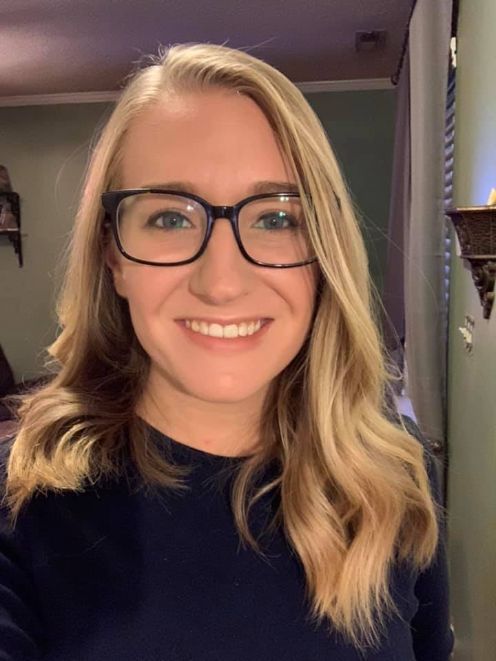

About Me
I am a student of the UNC coding bootcamp with some background experience in both front end and back end languages. I am eager to sharpen my skills and continue my learning so I can become a successful developer. My past experience working with front end and back end languages comes from a coding certification I aquired while working towards a Bachelor's degree in computer science. I found that I thoroughly enjoyed learning how to code despite how challenging it can be at times. I look forward to continuing my education in order to pursue my goal of becoming a full stack developer.
Aside from my coding bootcamp course, I work full time at a Toyota dealership as a Delivery Coordinator. My job revolves around ensuring that the new car customers have had an excellent buying experience. My primary task is to greet the customer with their new keys and go over all of the functions and features with the customer to familiarize them with their new vehicle. I also work part time as a horseback riding instructor.
Working two jobs while completing a bootcamp and finishing my Bachleor's degree does not leave me with much free time. However, I make sure to put time away each week to do the things I love. I have a 10 year old daughter and every Thursday, we spend some bonding time doing our favorite pastime activity- horseback riding. I also love to watch football (Go Panthers!) and running.